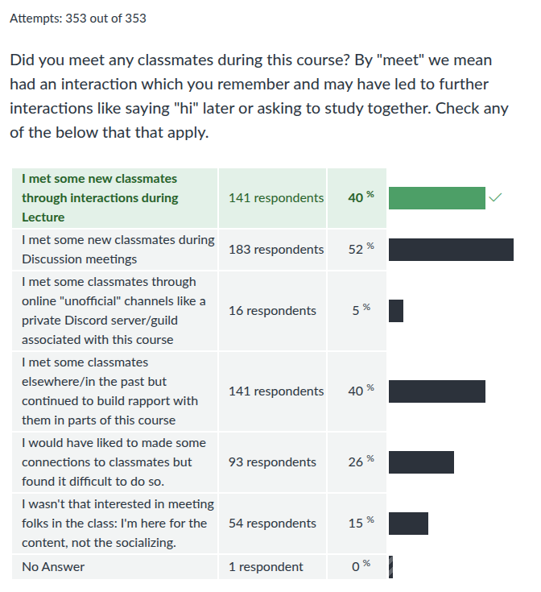
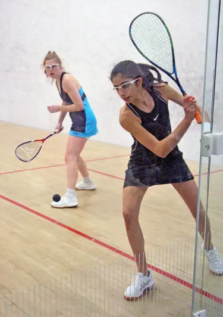
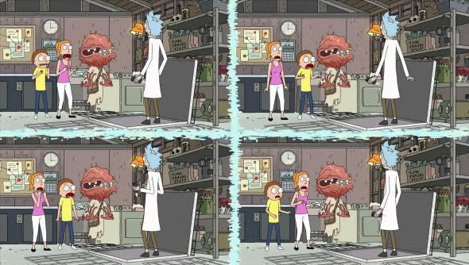

CMSC216 Exit Survey Results
Table of Contents
Summary Statistics for Multiple Choice Questions
Green vs Black colors and check marks have no meaning in surveys and no meaning in the below. Instructor responses to some items are shown in italics.


The above results track closely with past semesters for how students felt the course prepared them on core topics, the distribution of folks coming into the course with various types of prerequisites, and the impression of project difficulty and informativeness.

The above results are very interesting and encourage me to continue doing some sort of Manual Inspection. If more than half of students reviewed their manual inspection grading and tried harder on their code, it seems worth doing, especially since only a quarter of students felt test cases tell the full story.

These results mirror past impressions of discussion section structure well. However, more than in past semesters, we received lots of freeform feedback on discussion sections and possible new uses for that time. There were apparently some discussion sections that were problematic while others went well. Likely there will be some changes for how discussion sections are used in the future.

Bonus Reviews were received well with many suggestions for tweaks or refinements so likely they will continue is some capacity in the future.


All these results track closely with past semesters. Students like videos even if they don't use them all the time. While some students complain about "EP farming" in lecture, this is a modest cost to pay for the other benefits that open dialogue provides.

Aside from a modest shift from the total fraction of "FREQUENT" help to "OCCASIONAL" help, these results mirror past semesters closely.


These are all interesting and informative results. Many of the above items are discussed more in response to freeform feedback below but the following things are noteworthy.
- Almost half of students report they would still do the projects according to the current policies even in collaboration and AI were available.
- Almost three times as many students (59%) indicated they would collaborate versus use AI (23%) if both were available. These are not mutually exclusive results but speak to the intent of learning communities: to learn together.
- Few students reported that they would spend substantially less time on projects if their overall weight was lower. This controverts opinions expressed in some faculty circles that the students will simply stop doing assignments if they are worth little credit. Granted these results are student opinions on a proposed scheme and we would need to see whether future students follow through, but it is encouraging to me nonetheless that sentiment tends toward doing projects for the learning rather than the credit.
- Many students (58%) reported that this system would amp up their stress due to the exam requirement with folks reporting 2 to 1 that the system would negatively impact their learning.

Again, very informative results.
- Simply raising the exam weights was received very poorly
- A third midterm was the majority best but regular quizzes are a contender as well

There is a clear preference here (3 to 1) for Scheme 2. These results will be shared with other faculty and staff as a measure of student preference and 216 staff will proceed with spring planning this in mind.

Courses are designed around learning, not socializing, but forming a community to learn with helps in myriad ways. These results track closely with past semesters except for one category: the number of folks who indicated they met classmates during Discussion sections doubled this semester (26% in Fall 2024, 27% in Spring 2025, 52% in Fall 2025). I have no idea why that would be but it does explain why we received so much more feedback on Discussion sections: there seemed to be greater expectations for their role as a place for students to come together.
Freeform Feedback
Frequent Items in Freeform Feedback
| Count | Comment |
|---|---|
| Overall | |
| 60 | Good course / enjoyed it / well structured / would recommend |
| Liked the flexibility built into course policies | |
| Exams | |
| 2 | More practice questions for exams |
| 3 | Give a third midterm exam, two is too few |
| 7 | Liked having open resource exams |
| Projects | |
| 5 | Inconsistencies on GRACE / Gradescope made P4 and P5 frustrating |
| Timeline for P4 and P5 was too short | |
| 2 | Project videos helpful |
| 4 | No secret / hidden / release tests: hurray! |
| Difficulty of projects incresed markedly over semester | |
| "Puzzlebin was deathly" / "Puzzlebin was devil's spawn" "Nightmare" | |
| Projects too time-consuming | |
| Figuring out what to do on projects was taxing / instructions vague | |
| Sunday 11:59pm deadlines please | |
| P3 was (too) hard | |
| Labs/HWs | |
| 4 | Some labs were out of sync with lecture, lab topics were ahead of lecture |
| Other | |
| 2 | Online / Zoom office hours please! |
| 3 | Want more Office Hours / more TAs |
| Audio problems on videos were irritating | |
| Would like more Office Hours later in the day | |
| Want online Office Hours | |
| Bonus Engagement Point system too complex / needs better explanation | |
| Too many questions in lecture, slows down the flow | |
| Have some required attendance element in Discussion like quizzes | |
| Want to know how many Engagement Points I have | |
| Need more help at the beginning with environment setup |
Props to Staff Members
A number of staff members were individually thanked by students in their free-form feedback for help during the semester.
| Member | Thank-yous |
|---|---|
| Abdullah | 3 |
| Amber | 7 |
| Anh | 5 |
| Ayushi | 1 |
| CJ | 12 |
| Clara | 4 |
| Dongki | 4 |
| Emily | 4 |
| Emir | 4 |
| Jaehoon | 1 |
| Jeffrey | 3 |
| Lasha | 3 |
| Macy | 4 |
| Ming | 1 |
| Rohan | 9 |
| Saloni | 3 |
| Yufan | 2 |
| All TAs | 7 |
Notable Freeform Responses
Student comments are given in plain face.
Instructor responses are italicized.
Projects
- All the projects drove me nuts. I felt like sometimes the instructions were confusingly worded, and could be reworded to make it easier to understand.
I liked the way that projects were very specific about exactly the approach you need to use. It built my understanding and helped me find a starting point when I was stuck.
Code specifications are hard to write as many of you will find. I welcome feedback from those that found instructions confusing but most folks that say the instructions are confusing don't have any advice on how to improve matters.
Maybe instead of having 5 projects, there could be 3 major projects that have more material, but give students more time to complete them since some students who take 216 are engineering majors with heavy workloads from other classes as well.
This is not likely to happen as heavy workloads are generally expected for everyone taking this course. Learning to manage that load is part of the training that comes from earning a degree. It is NOT EASY and perhaps it'll e worthwhile to offer some early advice on techniques to manage time.
I think some mini projects would be lovely, so it would be nice to work on smaller more focused assignments.
Like Labs?
- Projects/labs take up the majority of my time and I might find one or two free days to study a bit after class prior to a midterm, but there is a lot of content on the exams that are covered in class but are not necessary to completing the projects (eg memory tables, hex/octal conversions & signed/unsigned, specific debugging exercises).
- I personally thought the projects were quite time consuming due their length/complexity, decreasing some of my study/practice time for the course.
- Without this project, I felt like I didn't understand much of the knowledge
- I think the projects are really the shining star of this course. I would say every one of them (besides maybe the first one..) greatly enhanced my learning while I completed them and I would not have done as well on the exams without them.
The projects helped me prepare for the exams.
The intent is that a primary means of preparing for exams is doing projects, by hand, via ones own understanding. Doing so will force students to confront
- Many techniques central to the course and covered in exams.
- Acquaint folks with basic coding conventions and functions which comprise more exam questions.
- Inevitably lead to bugs that train one on debugging problems, yet another kind of exam problem.
I'm glad to hear that this was effective for some students.
When we built the shell in Project 4, I feel like I finally understood how applications that I use almost everyday actually work which was really exciting for me.
So glad to hear that! The techniques used in this class would allow you to construct a simple build system like
makeor a simple testing framework liketesty, all projects we've used in past semesters. Rising to the level where the tools you use are things you could recreate and improve upon is an empowering feeling. It's what will lead some of you out there to write the next shells, programming languages, operating systems, and myriad other tools.
Assembly!!!
- Also, am I the only one who kinda didn't hate assembly? I think the project and exam were very fair, and it was one of the more informative parts of the course, even as someone who probably will never go this low-level again. Puzzlebox/bin were a hell of a time.
- Assembly is a bit evil but also a but interesting at the same time.
- Assembly :(
- Really didn't find the assembly portion that bad because you let us basically mirror P2 into it, so it felt more like translating the original code into another language, which reduced the stress of it a lot
- I hated assembly so much. It's the devil. You would think merely converting your c code that you already made converted to assembly would be easy right? Even though you know how to do it conceptually you would think turning your batt display into assembly would be easy right? WRONG.
- I actually found the assembly portion of the class to be my favorite. It gave me a better understanding of how compilation and running programs work on a lower level.
- Assembly sucks…
- Honestly, assembly was not as bad as I expected.
- Also assembly my #1 op, I want out.
- I would like it to be known that ASSEMBLY SUCKS SO MUCH AHHHH.
- Assembly was actually kind of chill. But those puzzle boxes were not, those were so evil. Absolutely malevolent.
- When it comes to Assembly, I don't hate it! Puzzlebin was absolutely torturous, but figuring out the solutions left me feeling so accomplished.
- I actually enjoyed assembly so no rant here :)
- P.S. Assembly coding is NOT that hard.
- I did not like assembly at all.
- Also assembly sucks. I hate it. Impossible to read.
- You knowing I was gonna rant on assembly has significantly reduced this response.
- I liked assembly a found it quite approachable despite many fearmongering it.
- Call me crazy but I liked assembly more than C.
- i hate assembly i hate assembly i hate assembly i hate assembly i hate assembly i hate…
- Although the Assembly project was a pain, I thought it was valuable to do.
- assembly is EVILLLL!!
Assembly is to computing what the Standard Model is to physics. You may hate it or love it, your practice may focus on it or avoid it, but it is our best understanding of how things work and it is at the core of all that we do. If you are to consider yourself a computer scientist then you should have at least a passing familiarity with its essence. The lens of assembly resolves many otherwise mysterious phenomena by exposing the mechanics of how programs run, the essence of what makes our discipline scientific.
Exams
I personally wasn't a fan of the "word problem" style questions on the exams, but I can understand why the professor includes them…. I think there should be some short answer questions… For example, these would be like: "What are the main differences between processes and threads?" or "What does MMU and TLB stand for, and what do they do?"
Life is a word problem. Real work is a word problem. I'm interested in seeing folks explain their understanding, in demonstrations of their powers of analysis and constructions. I'm not interested in their ability to select one of 4 letters or regurgitate definitions so I'll continue to construct exams that approximate the real-world scenarios I'd like to see students read for.
Discussions, Labs, HWs
An Hybrid version of discusions may be helpful (meaning meeting both in person and zoom)
Not likely to happen. This is an in-person course and we have enough trouble preparing and managing in-person meetings. Try conducting a mixed in-person/remote meeting with 30 people sometime and you'll see why: they ALWAYS go badly in one way or another. Meeting recordings are good enough to service those that sign up for an in-person meeting and don't bother to come.
I think there needs to be some element that makes it more prudent to go to discussions: eg: some sort of in discussion quiz because after a while I found myself not going to discussions as I felt it was not worth my time if they mostly did just the homework labs which generally were not very hard.
I will consider measures to make attending labs more worthwhile. There is a trade off between optional incentives and required credit. Generally required credit for attendance such as quizzes or worksheets lead to problems of "I couldn't make it, how do I make it up?" which are presently avoided through the "come if you want additional instruction" policy we presently have.
Wished it also had extra credit opportunities in all especially like lecture attendance.
Lecture participation earned bonus engagement points, lecture attendance did not. Hopefully you understood that and didn't credit yourself just for coming to class. Instead, you COULD earn extra credit by coming on Bonus Review days. I hope you knew that too.
- The difficulty of labs was a bit inconsistent. Some labs, I would finish in a few minutes, and others, I would have a lot of trouble on. I'd say slightly shorter labs to make more time for lessons [in discussion] would be a positive change.
- I think one day a week should be dedicated to the lab, while the other could be dedicated to project help or content review from the last week.
- I found myself a lot of the time wishing that the discussions were more traditional.
I would like if discussion had more questions like on the bonus review, even if it isn't for points the questions usually are a good check for me on how well I know what is happening.
Noted: use of discussions continues to evolve with TA input leading us to the present structure of labs and demos for parts of the lab on both Mon/Wed. I'll consider adjusting this to include activities aside from lab demos. The course is blessed with two Discussion meetings per week which is a huge boon if that time can be used effectively. That is an evolving process.
I think having the discussion video uploaded 3-4 days before the due date in advance would be a lot more beneficial primarily because sometimes I couldn't make a discussion section and couldn't get started on the code.
That's a you problem: if you signed up for a discussion section and then "couldn't make it" we are not willing to do more for you. Staff recorded discussion demos when they could and posted them towards the end of the week. Just like lecture, the fastest information is gotten by going to class. To expect otherwise is to come from a place of entitlement that will generate much disappointment in your life.
- I did not find the bonus review too helpful due to the collaboration, because one person will say the answer and you do not have the chance to fully think it through.
Interesting. I'm not sure what to make of this but will consider if there are any mechanisms to adjust. "Saying the answer" is one thing, but believing it enough to mark it as your own answer is another; I expected there to be some discussion an debate on those questions rather than an oracle and their followers.
- The issue with discussion is that there format relies on the TAs too much… If you want to utilize your TAs regardless, have them prepare ahead of time or follow a set of topics they need to discuss when demoing the lab.
- I think the structure was good, but the TAs could have used more instruction on how to run a good class.
I think it's unfair that there is such a strong discrepancy in the instruction provided by different TAs.
Wednesday evenings all TAs attended our staff meeting during which Prof Kauffman would briefly discuss the following week's lab and TAs would have a chance to ask questions. TAs would receive notice that they were scheduled to demo labs during the next week, get access to the lab solution and the script of material to discuss from Prof Kauffman usually by Friday the week prior. I do not have any more bandwidth to prepare TAs to lead discussion. Some TAs take their preparations seriously, others would like to but are strapped for time, others are unsure of how to present well, and a few have priorities that supersede demos for CMSC216.
While it is true to state "this TA does a better job than that TA", it is also true to state "this professor does a better job than that professor" and that "this student does a better job than that student." I've stopped thinking of this as "fair" or "unfair"; certainly it's far from ideal but it's the reality of what we have. Students might like a private tutor who personally caters to their needs in learning but they don't have the power to make this a reality so they attend a large public university with a reasonable reputation. This is how those universities run. I've worked at three and they all run the same.
If a TA is doing very badly, neglecting duties, and/or being unhelpful in discussion, I'll want to hear about it to remediate their approach or recommend they not be hired again. But that's all I can generally do just as all I can do for students performing badly is tell them to come to class, come to office hours, study more, and take responsibility for their commitments.
Sometimes the timings of labs are ahead of lecture which means labs can be confusing at times and some TA's can assume we went overthings in lecture and move ahead without explaining topics.
This is all my fault: I set the schedule and often cut it close between lecture topics and lab topics. It's better now than it has been in the past and we always cover material in a lab during the lecture week it occurs, but there are definitely times when discussion coverage of labs leads lecture. I'll continue to try to smooth those rough edges out but I'm resigned that there will always be few.
I think it would be more helpful if discussions focused on reinforcing concepts and preparing students for the exams, rather than spending most of the time on lab or project help, since students can always go to office hours for that.
Exam questions all have analogues in labs and projects. Sorry that you missed that connection.
I loved the concept of having discussion be a place to work through the labs, as that was helpful in allowing me to better understand the concepts we learned in class.
Glad it was working for you despite the many rough spots.
I really hated how the lab sections were structured, as the labs were often just walk throughs and I often learned more just not going to lab
Sorry it didn't work for you but if you didn't need the help provided in discussion, then not attending was the right move.
I would completely abolish discussions and replace them with office hours.
Nope: discussion sections are a blessing that you will find absent in most 4xx courses and likely miss. To that end, we'll leverage every second of time students and staff agree to meet for something we hope is productive.
Engagement
- I… felt like too many people were asking question for the sake of getting a bonus point.
The bonus exgagement point system is especially helpful in pushing students to actively contribute to the class environment.
Opinions vary on bonus EPs in lecture but according to survey results, about 32% of students asking questions by the end of the course were doing so out of curiosity while 11% of students were asking solely for bonus points (58% didn't ask questions). That's almost 3-to-1 curiosity to points farming, a ratio I'm willing to tolerate as it leads to more interactive meetings. I can do a better job or repeating student questions and answers but they are almost ALWAYS USEFUL to other students help confirm understanding, make connections between course material and outside topics, and guide me on where I'm losing students. That's all pretty important so we'll keep doing it. When you take a class in which no one asks any questions and find that everyone is confused about everything later, compare to this experience and then decide if other people's questions are annoying or actually helpful.
Shoutout to the engagement point system on Piazza. I have never seen so many students helping each other out and I have found many of their answers to be useful.
Glad you attribute to the EP system the healthy discourse on Piazza. A lively discussion board is a boon to the course and I'm glad a little bit of bonus credit helps make it worth student's while to participate.
I noticed that engagement points used to be offered during discussion; I think I would have attended in-person discussions instead of watching the demos if there had been chances to earn engagement points.
While we've done this in the past, it led to actual problems with "farming" bonus points. I'll consider how to do this in the future to avoid that but incentivize attendance at discussions.
Technical Matters
For P4, sometimes, a correct test would fail just because the grace server was busy, which is really annoying, since you don't know if you're having a skill issue or if grace is trying to juggle 67 student's tests at once.
The last few tests on P4 involved concurrent execution of processes in the shell. These are hard tests to write and are flaky as they are indeed dependent on the timing environment in which they run. Get used to that type of problem as it is what most of you will deal with throughout your career.
I believe a brief 131/132 recap at the beginning of the semester would really help as a transition into C programming.
We don't have the time for that. If you need a review of past courses in preparation, review. This is college now and if you meet the prerequisites on paper without having the actual skills, it is not the responsibility of staff to re-teach past course material. That's a hard stance in some respects, but it is the way of the world: you say you can program, then people expect you can program. In all your classes, be on alert early for signs you should brush up on past material to be ready for present challenges.
I surprisingly found threads harder than assembly.
Me too. Assembly has a lot of details but is a natural extension from C downwards. Threads and Processes are a huge change requiring a different mental model and a different programming model. Coordinating multiple concurrent activities is always harder than a purely serial phenomenon, in code and in life.
I wish there was a way to make the results more consistent or have the ability to check which portion of my code was contributing most/least to the speed up. This would make it easier to prioritize what to work on.
Check out profilers. They are a class of tool we did not have time to discuss but are intended exactly for this purpose. I don't now how much help they are in multi-threaded contexts but for serial codes, using a code profiler will give you a detailed view of which parts of your code are taking more time. GCC options can be used to profile code and view it with the builtin
gproftool. Alternatives also exist if that isn't to your taste. I lament that there isn't time to discuss this but thems the breaks.I wish we had spent more time on how hardware interacts with the software aspects such as threading and parallel computing and had more visual examples in class to appeal to visual learners.
There are more courses to take if you are interested in those topics. Primal among them is CMSC416: Introduction to Parallel Computing.
Cache locality actually helped me optimize some code for my job really impressed the folks over there!
Outstanding! There is something deeply satisfying about code optimization. If I ever run interviews, that'll be part of the interview process. And I'll take your comment as a sign that some topics from the course are likely to emerge in professional settings, always a gratifying bit of feedback.
I have a macbook and testy seems to be incompatible as I was met with time limit exceeded back on lab02 I believe.
The course tooling is built around Linux.
testyis Python so is likely to sort of work on other systems but hasn't been evaluated on platforms aside from Linux. The scripts you mentioned are for an older version of the program. The real trouble with Macs now are that they use a different instruction set architecture, ARM. That means you'll never be compatible with x86-64 code; you can't be. Also, Apple has made changes over the year so that tools like GDB and Valgrind just don't work. That means you're better off finding a server like GRACE with an x86-64 Linux install to make headway.
Hard Lessons
I spent a good amount of time in office hours (especially on P4, where I saw the sunset from Iribe)
Ah, the wheel of time turns and another program is born. At some point you'll likely have the same experience but watch the sun rise too. Log those hours now. It'll make you faster on future projects and also enable to predict how long things will take and plan accordingly. Then you can watch sunsets and sunrises on your own terms.
I have actually learned way more than I expected form this class as it was my first cs class where I was truly learning something new, which admittedly was a huge struggle for me, but overtime I learned how to adapt, and learned how to not be intimidated by things I did not know.
Ever notice how the expression "learning experience" implies significant discomfort? Real learning is a struggle. It is the same as lifting more, running further, and pushing further. The body and mind are exhausted as their limits expand. It's a high cost but the benefit is what you observed: you become stronger and those things don't phase you anymore.
Given how much more competitive everything in tech is compared to the previous decade, I HAVE to prioritize my extracurriculars/SWE roles/leetcode over studying for midterms
That is your prerogative. I'm not here to dictate what your priorities should be. I'm just here to instruct you on the things that have remained consistent for decades in computing so are likely remain important, the computing concepts that underpin all that we do. I believe building a career around invariant that you can rely on for a lifetime makes sense but you do you.
I also feel like since I knew the videos would show us answers, I became lazier as a result and would sometimes catch myself sitting around fishing for answers instead of actually digesting and learning the content.
That's good to realize about yourself. It is very tempting to take given answers as spoon feeding rather than trying to digest the problems and discover ones own answers. The more you practice deriving your own answers, the better equipped you'll be when no one can give you answers.
I don't see how learning to write or debug assembly will ever be used in the future, and an understanding of simple operations is enough. It's not like we ever learned how the compiler actually turns code to assembly, so writing it ourselves doesn't give us a deeper insight in how it REALLY works.
Correct, we didn't write a compiler. That's what you'll do in CMSC430, a course I highly recommend as it will tie together pretty much everything in computer science into a single course. When I was a student, I didn't learn assembly well at all so when I took my compilers course, I had to do double time to re-learn assembly AND construct the most complex program I'd ever written. My goal was to prevent my students from experiencing that unpleasantness. Sunrises can be fun, but they are less so when competing with your compiler's buggy assembly generation.
I've spoken to my friends at other universities and assembly was only a small part of the curriculum, and they never had to write in it. However, virtual memory, threading and processes were much more important: they've learned mmap on the third week of class.
Consider transferring if you like their curriculum better. My undergrad university covered assembly reasonably but not threads until our required operating systems class. I learned
mmap()on my own in graduate school. The first college I taught at didn't discuss assembly or virtual memory at all until senior year. UMD has it's own take on these things which I try to respect in how I run this course. There's a lot of computing to discuss and the ordering in which one approaches it is less important than approaching it at some point. I expect your friends at the other universities will have a rough time if they take a compilers course as they won't really know what code their compiler should generate.
Frequently syncing machines was very tiresome and can cause hours of debugging over possibly an unsaved version.
Yep. If you can, automate this, and when you can't, be paranoid.
Future Policy
I understand the need to catch AI, but I wish for Prof K and the staff to be more open with conventions that are explicitly forbidden.
A year ago your average LLM couldn't write meaningful assembly. This semester, LLMs spit out assembly that in some cases looks decent, like hand-crafted code, and in other cases looks like it was just fed through GCC to generate the code. Our landscape is evolving rapidly. If you expect me to say up front, "your code should look like this to be fair and looking like this is cheating" you are being unreasonable. You're asking me to provide AI-users the prompts they would use to evade detection ("write code that does this without doing this thing [that Kauffman forbade]"). That is the nature of the beast with which we contend now. I've had dozens of interviews with students that submitted AI slop over the past few years and never been convinced by a single one that they really owned their code. There have been a few cases where staff made mistakes and looked at the wrong code and those students were cleared and there were a few instances in which students, on the fly, offered explanations that gave them plausible deniablility but were shaky at best. But when student code was identified as having weird signs, I've yet to have a student really own that code and make me think "wow, they really can write code like that!" It's always been instead "oh, I looked at this Stack Overflow post and in the 5th answer down in the comments, this one line of code appeared so I thought that was the way to do it…" or "oh, I read this last part of this cheat sheet and didn't really read the description of when to use this technique, just copied and pasted that code into my project in a really complicated fashion that doesn't look like the cheat sheet anymore but really it's my own work and I swear I didn't use AI." It could be that person is genuinely confused or that they lying. It's hard to tell. Either way, something has gone wrong. The current policy is to own your own work. When folks use techniques they can't explain and that generally come not from course material but compilers or LLMs, I feel compelled to do something about it. I've tried to police this on projects up to now but one thing I'm likely to do in the future is just to let those students fool themselves on projects until exam time and then let the bill come due. It just isn't tractable for staff to make the determination anymore between those that are working to learn themselves and those that are letting the LLMs pump out slop for them.
I really like the manual inspections. They gave me a chance to earn back points that I might have lost due to failing a few of the test-cases. I think that this is something that should remain in the course for future semesters.
Glad to hear this. I'm trying to figure out a way to continue manual inspection in some fashion as it is more true to the reality of needing to maintain code over time. It's also a nice place for partial credit as you observed. It's hard though, as it isn't a good use of staff time to review a bunch of AI-generated code which appears to be about 15% of submissions.
Grading scheme 1 of failing people with an average below 70 sounds good on paper, and I agree, getting above a 70 on an exam, especially the 216 open-note style is definitely doable. However, I think this is a dangerous policy…. sickness the day before, life events, multiple exams on the same day, and other emotional turmoil are not always excusable and can lower a student's grades on an exam.
This was my reaction when other members of the department suggested it as a scheme. A wise staff member asked whether anyone had polled students about their opinions on Schemes which prompted my questions to all of you. The results from the 216 Exit Survey are being actively discussed by CS faculty and are informing the decisions of many instructors. To be clear, Scheme 1 is to have an average of 70% or above on exams, not every exam at 70% or above, which mitigates the "one-bad-day" risk but clearly students see this as a stressful gambit.
I personally would use AI if this were implemented though, because I already do lol. I have the mindset tough to try and only let it build my understanding, because although AI does feel scummy and is wrong a lot I have found it to actually be pretty helpful in fully grasping concepts. So yeah, the staff is in a tough spot with that one, and I would be lost trying to make a decision as well.
AI is now a tool on the table and is here to stay. No one knows what the right balance for its use is professionally or in learning settings. It's too new to know. In 10 years, we'll likely have some more authoritative information on how students should best use AI to positively impact their learning but that information is not yet available so all of you are navigating uncharted territory. Perhaps the best advice is caution: if you see the AI do something you don't understand, slow down and seek to understand it before moving ahead. Unfortunately, that's hard advice for many students to put into practice.
If I was not in this situation myself during the semester, I would have normally brushed it off as worthy penalties to someone who didn't pay attention in class. But the amount of stress I've endured over that period [of getting the AI-use flag removed] was something I hope that no innocent student has to experience in future semesters. I can't offer any perfect solution, aside from more communication/updates after the flag about the decision to escalate the academic integrity violation to solving AI-use/compiler use in projects (though the second option listed in this survey seemed like an interesting option to explore). But, from my experience, the stress of incurring an XF for a wrongful AI/compiler-use flag has significantly impacted my way of life both outside and inside CMSC216, the quality/ability to submit work for other classes, and basic self-care.
I hear you. Conducting code reviews in possible cheating cases is stressful for everyone. I know that some students just lie during those situations because they told me they did afterward. I'd much prefer to spend my time teaching rather than prosecuting. Thus the potential policy changes that would alleviate those situations entirely. That would mean no one gets accused of anything like that on projects which would address your situation directly. The risk, of course, is that young folks rely too heavily on the shiny new toys and get slammed on exams. Something's got to give though, and I'm willing to try more open policies as what we're doing now is not working well.
I felt like the AI thing where you had to go take a hit to your P3 points or face the interview and possibly get sent to the OSC was a bit anxiety inducing… However, I understand that the high risk for the low reward was probably to incentivize students not to come so that Professor Kaufman isn't overwhelmed with a thousand students, so from your perspective, I can't really fault you.
Thanks for your understanding of the nuance. I have to call a shot on this that balances limited staff time, validation of the effort of folks who worked hard or took a grade hit if they couldn't finish the project, and some sanction for those that appear to have gone against syllabus policies. It is a hard needle to thread and I'd rather sidestep that in the future if possible.
- I honestly think the current AI policy is the way to go. These projects are important and were a main way for me to apply what I learned and actually internalize the information. Encouraging collaboration could be nice, but these projects are meant to be a show of our capabilities.
- I think it would be good if you could find a way to keep AI outlawed in this class but I guess I understand of that isn't feasible.
When it comes to projects, I believe allowing the use of AI would be a good option, since the world outside the university is clearly moving in that direction.
It is not possible to put the genie back in the bottle. I know what has worked for student learning in the pre-LLM era and there is no authoritative information yet on how LLMs should be used appropriately in learning. Obviously there is a big push in many companies to use LLMs, though anyone saying they have authoritative evidence that this is a good idea in the long run is lying: LLMs haven't been around long enough to determine if code produced by LLMs hold up for more than a few years. It's even harder to say how LLMs should be used for learners and it'll take some time to figure out where this new tool fits. We'll just do our best amid the flux.
As AI tools get better and better, eventually there will be a point that the code will not be able to be identified as human or AI (some cases will probably have happened during this semester as well).
We are at that point in education now. I don't expect students to write the best code so LLMs can do as well or better on student projects. That's because LLMs have be trained on every student project that has ever appeared on the internet: any code you put on Github will get ingested into Microsoft's machine and probably a bunch of others. Since LLMs often amalgamate beginner and expert features, it is still possible in some cases to see patterns of likely LLM use, but I expect those qualities will become less reliable as indicators soon so it's time to set a new policy.
I think having difficult projects where AI can't be used to solve problems is the best way of having it.
The level of difficulty required to preclude LLMs from solving projects would preclude sophomore students from completing them as well. What you are suggesting is just not possible.
- In the 2nd option [more proctored assignments], I think you should drop the homework quizzes (worth 10%) from the grades and rather give them as practice. Then, the 5 projects themselves should be a total of 5-10% (1-2% per project). But once analyzed/reviewed by the TA, each project should have to be explained by the student to the TA, and that should be worth 20-25% (4-5% per project explanation).
Having TAs be more standardized in the explanations of labs would be helpful… having one-one code reviews to show mastery is also smart because the student wouldn't be able to just use AI blindly.
I'd love to do technical code reviews where students are evaluated one-on-one on their project code. Unfortunately that is nearly intractable. For spring semester, I'll have 180 students (half of this semester) and if they were each to do a 10min code review on 4 projects, would require 7200 minutes over the semester. If we had 10 staff members and did the code reviews in a 1-week period after the 4 projects, that would be about 3 hours of staff time on those weeks. It's possible to do but would be a huge logistical undertaking. I also inherits all the problems students observed about differences in TAs as well. I'm thinking about it and in a small setting would be very valuable but it would be real hard to get right at scale.
The second grading scheme [more exams] falls short since it does not adequately balance the work required for a project and the grade received. This means that students would only practice for the exam like CMSC 131 and 132, and would learn much less.
Sorry to hear that your past courses didn't connect projects and exams much. I do explicitly connect them so I do not agree that projects and exams are exclusive, that instead completing projects is intended (and has been reported) as a valuable way to prepare for exams. That's not likely to change but I know student perception of this is often not where it should be. When I ask students whether they reviewed their project solution and recoded parts of it in preparation for exams, few of them even thought of that as a possibility. I'll make sure to emphasize that in the future irrespective of what grading scheme we use.
I would argue that failing students who average a C- on exams might not be the best idea… The optimal solution to this problem would be to fail students who receive less than the UMD required passing grade on all in-person assignments. This way, students who do poorly on big exams for whatever reason could still be ok if they demonstrate enough mastery on smaller in person assignments.
We don't have any small in-person assignments in our CMSC216 right now. I'm considering adding some but the only proctored assignments are exams.
It always felt a bit awkard to do the [bonus] "review" where we wouldn't find the answer until much later.
Noted: this along with other feedback on Bonus Review gives me ideas on changes we can make to improve matters.
If you could develop a CMSC216-specific chatbot with guardrails in place that could keep someone from just generating a full assignment… it would be really beneficial to people working on projects… Something similar to the CMSC131 Discord bot I think Elias's classes were supposedly going to implement.
I'll contact Prof. Gonzalez about this to see what he's up to and I appreciate the suggestion. Unfortunately, this approach does not solve the problem of folks using other LLMs to complete their code in a thoughtless fashion. That's the heart of the problem we face.
I would predict a similar scheme where the people with the most genuine interest would benefit by doing these things mostly on their own, and I think it would be smart in that case to provide the perspective that us students come to class to learn how WE can do systems programming, not to learn how to make the AI tools do it for us.
Agreed: I know students learn core techniques if they code these things themselves. That is my advice now for those who want the get the most out of projects and is likely to be my advice for a long time into the future. Folks who want to cut corners will always do so irrespective of my recommendations or course policies.
Students will continue to use AI and there is little reason to try to catch people. I have been to office hours multiple times and had to wait over 2 hours to get help. This is why students resort to AI.
Understood. The general stats on whether students could get help looked fine, I know that is small consolation for those that wanted help and couldn't get it when they wanted it. LLMs are a potentially nice bridge for these gaps. Folks might argue that LLMs sometimes produce wrong answers but so do TAs and Instructors. Ultimately students should realize they are responsible for their own understanding; course staff cannot "make" students understand, nor can LLMs. But having options that are on-demand is always nice.
I think that letting students do whatever for the projects might create a disconnect between how much they can actually code versus what they are submitting, making the exam questions very difficult if they don't have enough practice.
Yes. If a student asks Chat-gippety to write their project, submits it, and doesn't do anything else with the project, they will struggle on exams. That is the reality now and will be in the future. The only thing we're proposing to change is whether students "get in trouble" for that behavior. It's harder to tell when students do this now based on their code and so I'd rather spend staff time helping students who want to learn and practice rather than policing those that don't.
No matter how much a student may study, some people are just bad test takers. Having an entire class rely on all proctored exams and lessening projects to >20% weight is a disservice to those students. Please understand that not everyone studied/tests/performs the same and that this would negatively affect more students than one might realize.
I understand this concern and lament that project code is no longer reliably authentic. I lament that the prevalence of cheating requires such policy changes. I know that makes it hard on those that struggle in exam settings. Both Scheme 1 and Scheme 2 put additional emphasis on proctored assignments (exams) and to offset this, I am also exploring exam forgiveness policies such as best 3 out of 4 exams scores are counted. Hopefully this will provide a reprieve for those that struggle during exams.
I wish there were more midterms and quizzes throughout the semester, as I had a harder time staying engaged when there wasn't a test dawning on me.
Your wish is granted.
I feel sorry for the people that used AI because they missed out on a lot of great stuff.
Yep.
Advice to Future Students
- Start projects early!
- Commenting [assembly code] was so helpful and crucial.
- If I had to make a suggestion to future students, I would say, even if AI is permitted on projects in the future, try to do as much as them as possible without consulting AI. You are enrolled in a top-notch CS program, so you might as well do your part to make the most of your learning.
- Textbook readings are exceptionally helpful, despite the fact that I neglected them for the first half of the semester.
All sage and time-honored advice.
Miscellaneous
I would have liked it if the assignments were also inputted into Canvas - this might sound a little silly, but sometimes I had other things clouding my mind in a week and I forgot to do the homework quiz or the lab.
Understood. This is logistically painful as it requires creation of two assignments, one for Gradescope and one for Canvas, but I understand how this would be helpful to students and will consider it in the future.
I really, really liked the pop culture references and jokes thrown around in code examples, midterms, slides… I mean, they kinda resonated in me somehow (I guess I'm also a loser who got the joke), and made you, as an instructor, easy to approach… perhaps instructors are not these evil grey characters, but also people who like media I like too. Eh…. maybe I'm saying stuff that doesn't need to be said.
Why not have some fun while you study? My life has provided the option to infuse my work with some mirth and I've checked that box. Glad it worked for you.
We should have a clear list of assembly and GDB instructions we need to know as there's so many of them.
You do:
I came into it thinking it would be useless because of current technology trends, but I gained a newfound respect for lower level languages and also really enjoyed it.
Happy that we defied your expectations.
My last semester made me feel a lot less confident about doing well in computer science but now I feel a lot more confident and felt that I learned a lot.
Outstanding. Learning is hard. Stay determined. Keep caring.
Consider giving students next semester the option of getting out of cheating consequences by playing Kauffman in a game of squash.
Stroke of genius. I don't me to Boast, but the only way cheaters would get through that is if I Let them win.

Hey professor, are u a r&m fans?
Who isn't? When you're sick of parallel programming, take a break and watch some parallel episodes…
